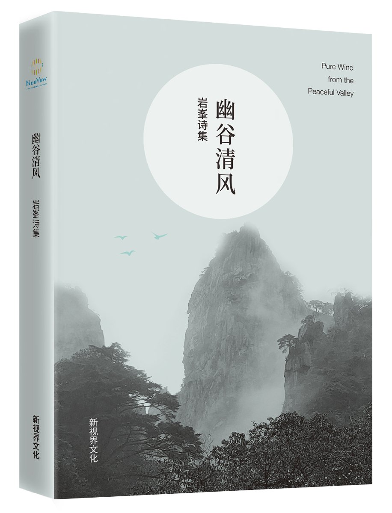
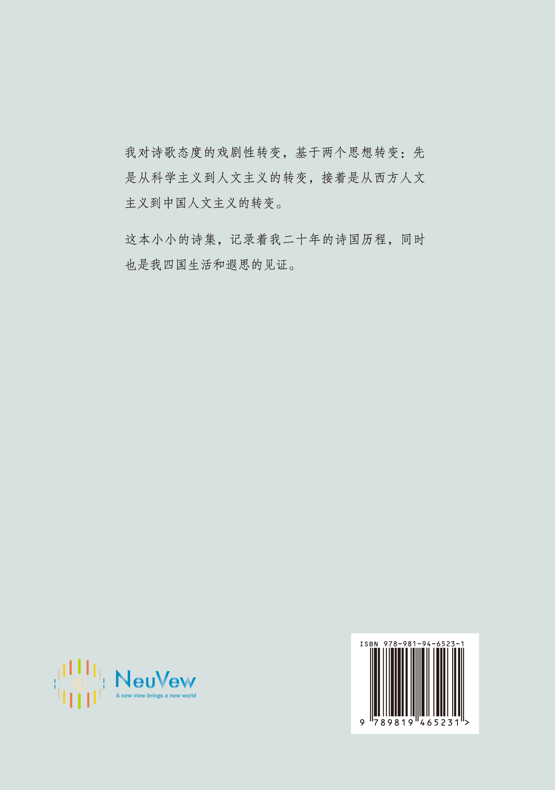
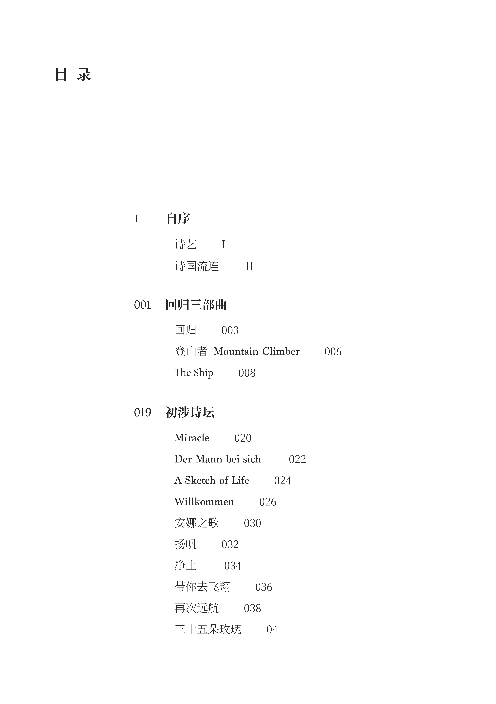
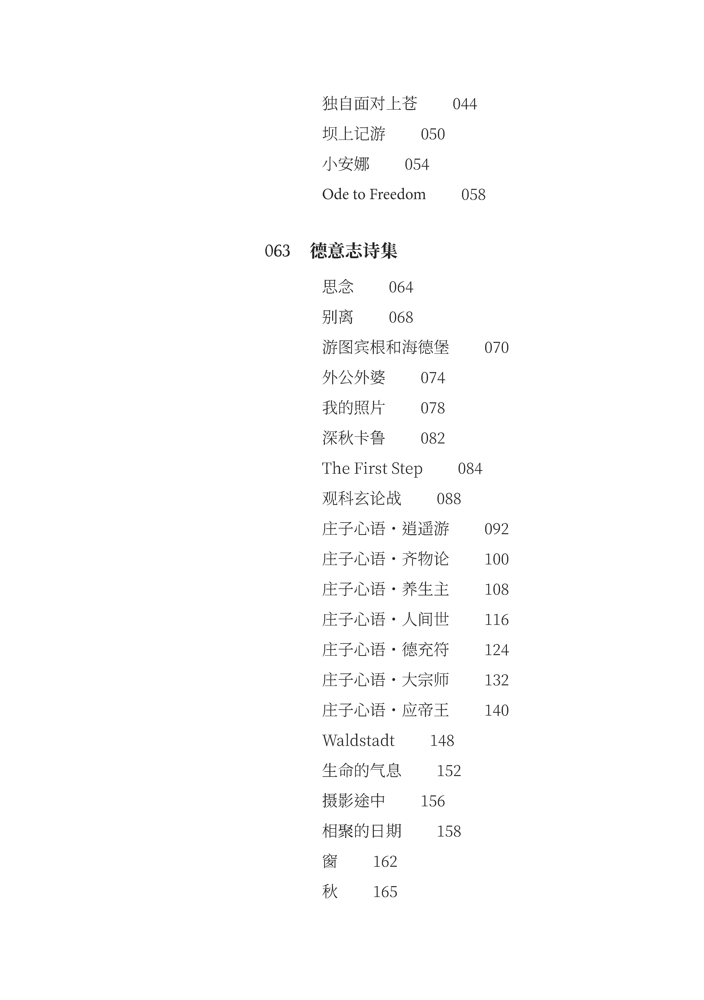
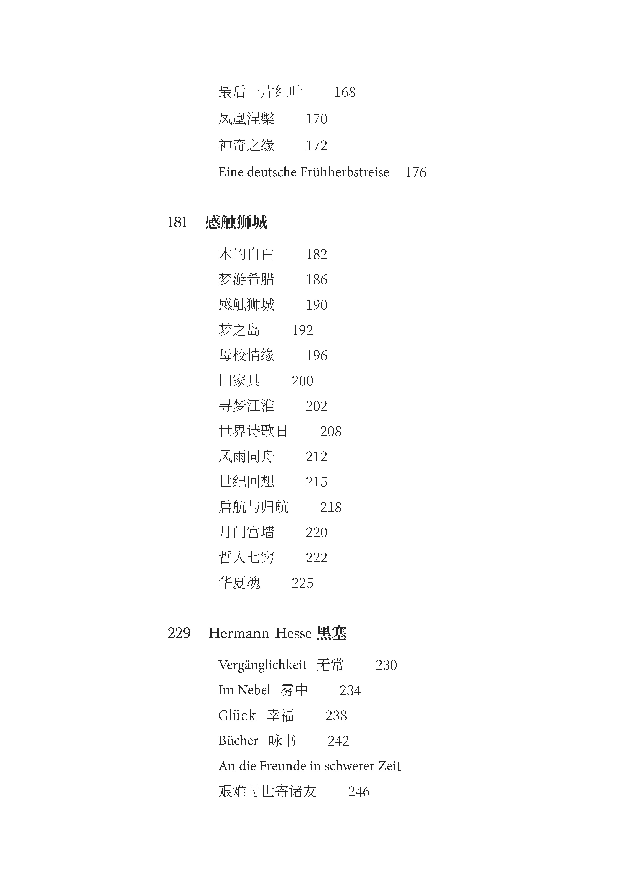
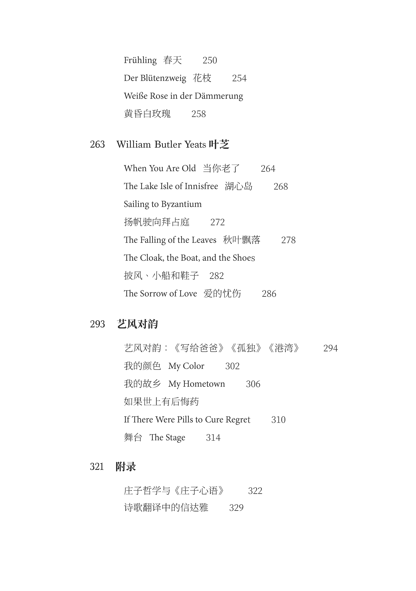

Pure Wind from the Peaceful Valley






Introduction
This is a multi-lingual poetry collection. It contains original poems written in three languages: Chinese, English, and German and translated poems invloving three directions: German to Chinese, English to Chinese, and Chinese to English. The poems were composed over a period of 20 years in four countries: the United States, China, Germany, and Singapore.
The poems spread across a wide range of themes, adopting various styles and forms. The poet's own commentary accompanies each poem. His own and his daughter's photographs and paintings dot the pages. And finally the collection was produced by his family.
All in all, it's very special poetry collection. If you can read Chinese, you may find more information about it on the Chinese page.